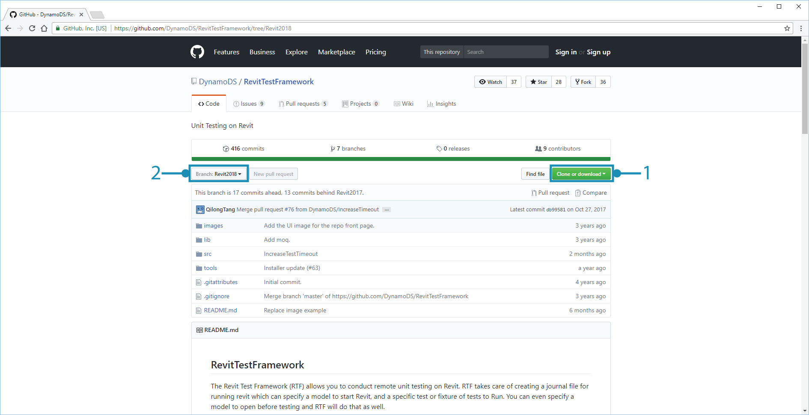
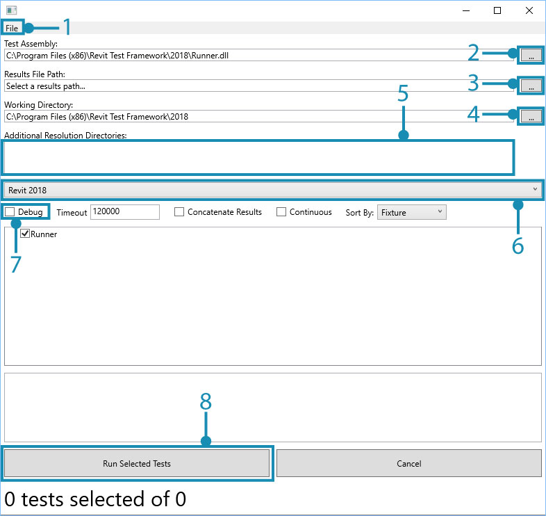
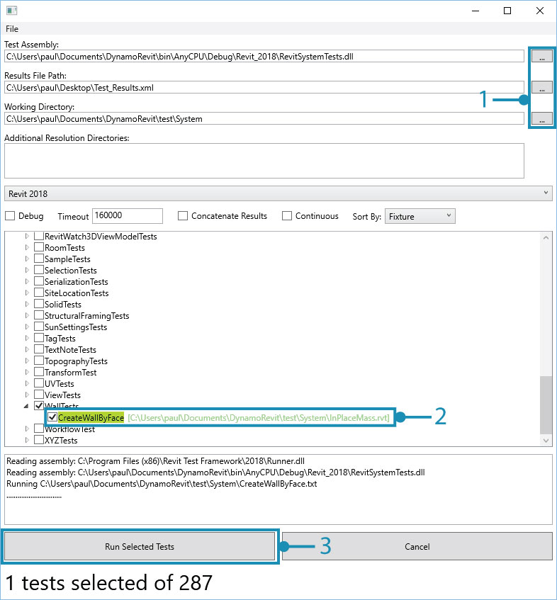
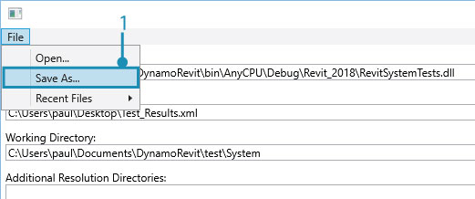
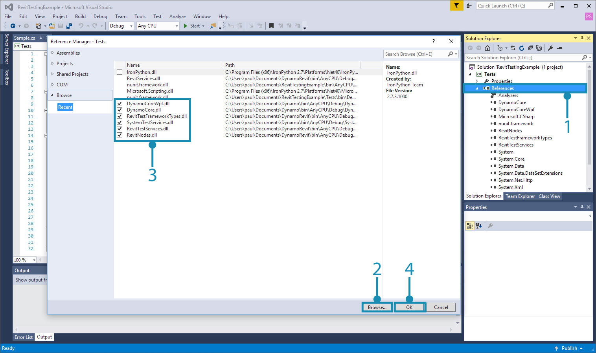
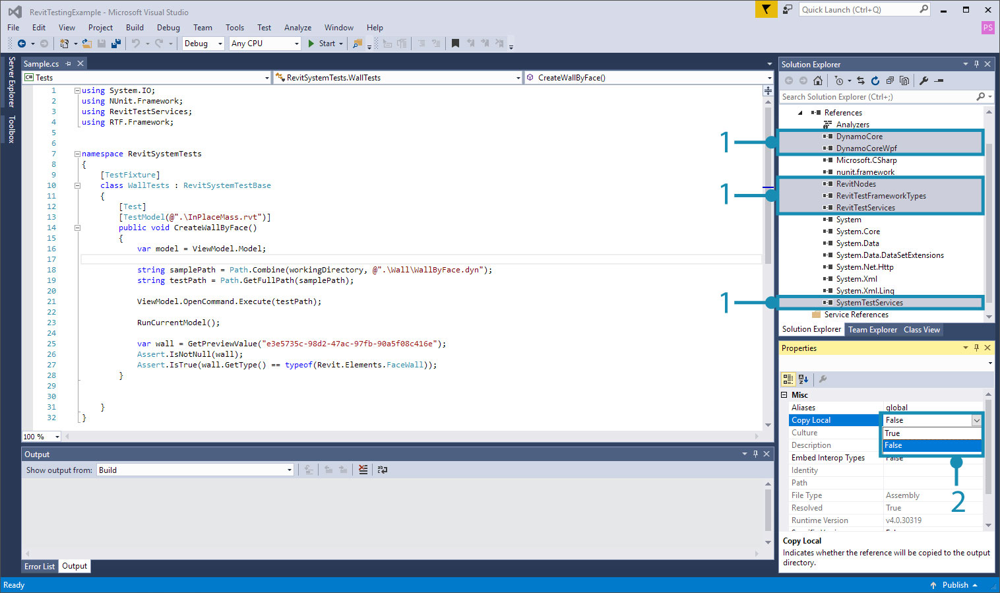
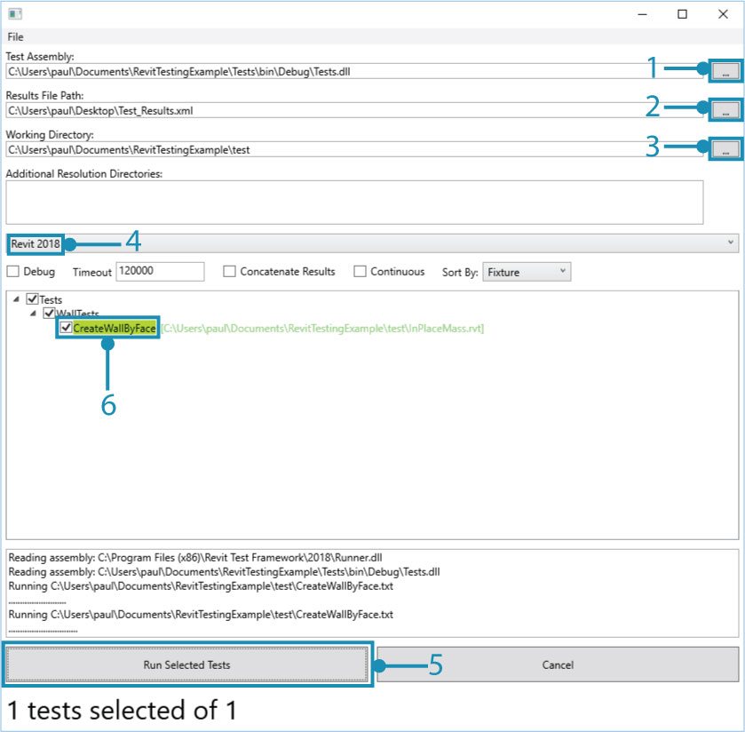

Testing for DynamoRevit
If we are developing a package for Revit or working with the DynamoRevit source code, the tests we write need to incorporate both Revit and Dynamo functionality. A test could involve opening both a Revit file and Dynamo file, then adding a DynamoRevit node to the workspace to simulate how a user would create a graph. Writing a test for DynamoRevit will generally follow the walk-through in the Testing section with the addition of several steps. Running tests for Revit and DynamoRevit is a more involved process since we are launching multiple applications and referencing other libraries.
The Revit Test Framework
The Revit Test Framework (RTF) allows for remote testing on Revit. RTF creates a journal file for running Revit, specifies a model for it to open, and a specific test or fixture of tests to run. A model can also be specified to open before testing to run several tests with.
The Revit Test Framework is open source and hosted on Github: https://github.com/DynamoDS/RevitTestFramework

Using the same git commands from the walk-through in Build DynamoRevit From Source, we can clone and build the repository to run RTF. Open a new command prompt and enter the following commands:
cd "C:\Users\username\Documents\GitHub"to set the directory into which the repository will be clonedgit clone https://github.com/DynamoDS/RevitTestFramework.gitto clone the repository from its URLcd "C:\Users\username\Documents\GitHub\RevitTestFramework"to set the current directory to the repositorygit checkout Revit2018switches to a branch of RTF matching the installed Revit version, similar to the process in building DynamoRevit from source
Once the repository is cloned, open the solution file in Visual Studio and build the solution. In the bin folder are two options for running RTF:
- RevitTestFrameworkGUI.exe provides a visual interface to select tests from a treeview and visualize the results of the tests as they are run. Testing configurations can be saved to run again later.
- RevitTestFrameworkConsole.exe is a console application which allows running RTF from a command line. All the settings in the GUI are available here as well.
How to run a test for DynamoRevit in the GUI
Tests are run in the RevitTestFramework by specifying an assembly containing the tests and any supporting references. We can start by running a test that comes with the DynamoRevit repository in the GUI application. Start by opening the RevitTestFrameworkGUI.exe application in the bin folder of the build.

RTF loads a default test from its
binfolder when it starts
- Select
Fileto save or load a local RTF config- Set the
Test Assemblypath, the location of the assembly containing the tests to run. (e.x. RevitNodesTests.dll, RevitSystemTests.dll, RevitServicesTests.dll which can be found usually in DynamoRevit bin folder)- Set the
Results File Path, the result file is an.xml file that will contain the test results. If the path points to an existing file, RTF will overwrite it- Set the
Working Directory, the location of the testing files- Set the
Additional Resolution Directoriesto assemblies that the test assembly will need to load (e.x. the Dynamo Core location when it is not set in theDynamo.Configin DynamoRevit bin folder)- Specify the
Revit versionto run the tests with- Select
Debugto launch a debugging session with the test- Select
Run Selected Teststo run the tests
For this example we will run one test from RevitSystemTests. Add the RevitSystemTests assembly from DynamoRevit and select CreateWallByFace under WallTests. If the assembly does not load, try adding SystemTestServices.dll to Additional Resolution Directories from DynamoCore.

The test passed, shown by the green highlighting. The name of the Revit model associated with a test will turn green if the working directory is set correctly.
- Set the
Test Assembly,Results File Path, and theWorking Directory- Select only the
CreateWallByFacetest- Select
Run Selected Tests
Whether a test passes or fails, it will write its results to the file specified in Results File Path. The output file from a test run is an NUnit-formatted results file compatible with many CI systems. Open the Test_Results.xml file for more information on the test we just ran.
<?xml version="1.0" encoding="utf-8"?>
<!--This file represents the results of running a test suite-->
<test-results name="C:\Users\paul\Documents\DynamoRevit\bin\AnyCPU\Debug\Revit_2018\RevitSystemTests.dll" total="1" failures="0" not-run="0" date="2018-01-02" time="22:00:03" errors="0" inconclusive="0" ignored="0" skipped="0" invalid="0">
<test-suite name="DynamoTestFrameworkTests" description="Unit tests in Revit." time="5.6363755" asserts="6" type="TestFixture" result="Success" executed="True">
<results>
<test-suite name="WallTests" description="Unit tests in Revit." time="5.6363755" asserts="6" type="TestFixture" result="Success" executed="True">
<results>
<test-case name="CreateWallByFace" success="True" time="5.6363755" executed="True" asserts="6" result="Success" />
</results>
</test-suite>
</results>
</test-suite>
</test-results>
Since this test configuration is working, we can save these settings for another session in a .xml file.

- Select
File > Save As...
How to run a test for DynamoRevit in the Console
Alternatively, we can run tests from the command line with all the options we had in the GUI application. Open a command prompt from the directory of the RevitTestFrameworkConsole.exe application and enter the following command:
RevitTestFrameworkConsole -hshows all available commands
Options:
--dir=[VALUE] The full path to the working directory. The working directory is the directory in which RTF will generate the journal and the addin to Run Revit. Revit's run-by-journal capability requires that all addins which need to be loaded are in the same directory as the journal file. So, if you're testing other addins on top of Revit using RTF, you'll need to put those addins in whatever directory you specify as the working directory.
-a, --assembly=[VALUE] The full path to the assembly containing your tests.
-r, --results=[VALUE] This is the full path to an .xml file that will contain the results.
-f, --fixture=[VALUE] The full name (with namespace) of a test fixture to run. If no fixture, no category and no test names are specified, RTF will run all tests in the assembly.(OPTIONAL)
-t, --testName[=VALUE] The name of a test to run. If no fixture, no category and no test names are specified, RTF will run all tests in the assembly. (OPTIONAL)
--category[=VALUE] The name of a test category to run. If no fixture, no category and no test names are specified, RTF will run all tests in the assembly. (OPTIONAL)
--exclude[=VALUE] The name of a test category to exclude. This has a higher priortiy than other settings. If a specified category is set here, any test cases that belongs to that category will not be run. (OPTIONAL)
-c, --concatenate Concatenate the results from this run of RTF with an existing results file if one exists at the path specified. The default behavior is to replace the existing results file. (OPTIONAL)
--revit[=VALUE] The Revit executable to be used for testing. If no executable is specified, RTF will use the first version of Revit that is found on the machine using the RevitAddinUtility. (OPTIONAL)
--copyAddins Specify whether to copy the addins from the Revit folder to the current working directory. Copying the addins from the Revit folder will cause the test process to simulate the typical setup on your machine. (OPTIONAL)
--dry Conduct a dry run. (OPTIONAL)
-x, --clean Cleanup journal files after test completion. (OPTIONAL)
--continuous Run all selected tests in one Revit session. (OPTIONAL)
--time The time, in milliseconds, after which RTF will close the testing process automatically. (OPTIONAL)
-d, --debug Should RTF attempt to attach to a debugger?. (OPTIONAL)
-h, --help Show this message and exit. (OPTIONAL)
If we wanted to run the same test that we did in the GUI, we can specify all options in a single command separated by spaces.
RevitTestFrameworkConsoleprecedes the options--dir="C:\Users\username\Documents\DynamoRevit\test\System"sets the working directory-a="C:\Users\username\Documents\DynamoRevit\bin\AnyCPU\Debug\Revit_2017\RevitSystemTests.dll"sets the test assembly-r="C:\Users\username\Documents\RevitTestFramework\bin\AnyCPU\Debug\Test_Results.xml"sets the results file path-t=CreateWallByFacespecifies the test to run
How to write DynamoRevit tests
Writing a test that involves Dynamo and Revit requires the same setup covered in testing for Dynamo Core with a few extra steps. In addition to the test libraries provided for Dynamo, DynamoRevit provides RevitTestServices.dll, a library containing base classes and methods for testing with Revit. This walk-through will cover how to setup a Visual Studio project for writing a Revit test. First, we need to reference RevitTestServices.dll and a few other assemblies. Create a new Visual Studio project or open an existing one and add the following references.
RevitTestServices.dllcontains two base classes,RevitNodeTestBaseandRevitSystemTestBase, for unit and system testing that involves RevitSystemTestServices.dllis provided by DynamoCore and is required forRevitTestServices.dllRevitTestFrameworkTypes.dllis provided by RTF and containsTestModelAttributefor specifying a Revit model to open when a test runsDynamoCore.dllcontains Dynamo's core model
We also need to reference these assemblies for this specific example.
DynamoCoreWpf.dllfor accessing Dynamo's view modelRevitNodes.dllfor using DynamoRevit nodes

- Right click on
Referencesand selectAdd Reference...- Browse to the locations of each reference
- All six references we need for this project
- Select
Ok
By default, these assemblies will be set to Copy Local = True. Once they are added, select them and change this property to False.

- Select the assemblies we referenced
- Set
Copy LocaltoFalse
For this example, we can use the CreateWallByFace test as the sample test. Add the following code to an empty class in the project.
using System.IO;
using NUnit.Framework;
using RevitTestServices;
using RTF.Framework;
namespace RevitSystemTests
{
[TestFixture]
class WallTests : RevitSystemTestBase
{
[Test]
[TestModel(@".\InPlaceMass.rvt")]
public void CreateWallByFace()
{
var model = ViewModel.Model;
string samplePath = Path.Combine(workingDirectory, @".\Wall\WallByFace.dyn");
string testPath = Path.GetFullPath(samplePath);
ViewModel.OpenCommand.Execute(testPath);
RunCurrentModel();
var wall = GetPreviewValue("e3e5735c-98d2-47ac-97fb-90a5f08c416e");
Assert.IsNotNull(wall);
Assert.IsTrue(wall.GetType() == typeof(Revit.Elements.FaceWall));
}
}
}
The structure of the test is similar to DynamoCore tests with several key differences.
- The
RevitTestServicesusing statement provides Revit test base classes - The
RTF.Frameworkusing statement provides an attribute used to specify a Revit model - A class that inherits
RevitSystemTestBaseto use functions specific to Revit System tests - A
[TestModel(@".\InPlaceMass.rvt")]attribute from RTF to specify a Revit model with which to run the test - A Dynamo file path
string samplePath = Path.Combine(workingDirectory, @".\Wall\WallByFace.dyn");that specifies a Dynamo file to run - A
RunCurrentModel()method to run the Dynamo file
Notice that the test uses a test model InPlaceMass.rvt and a Dynamo file WallByFace.dyn. Create a test folder in the project directory and copy these files from the DynamoRevit test folder into it.

- The Dynamo and Revit files copied from the DynamoRevit repository
- The
testfolder inside the project directory that will serve as the working directory
Now build the project and run the test in the RTF GUI application.

- Set the test assembly path to the
Test.dllwe just built- Specify a results file
- Set the working directory to the location of the copied Revit and Dynamo files
- Make sure the correct version of Revit is selected, 2018 in this example
- Select
Run Selected Tests- The test will become highlighted green if it runs successfully, otherwise it will become highlighted red if it failed
The DynamoRevit repository has many tests to use as a reference when writing new ones for a package under Tests > Libraries in the Visual Studio Solution Explorer.